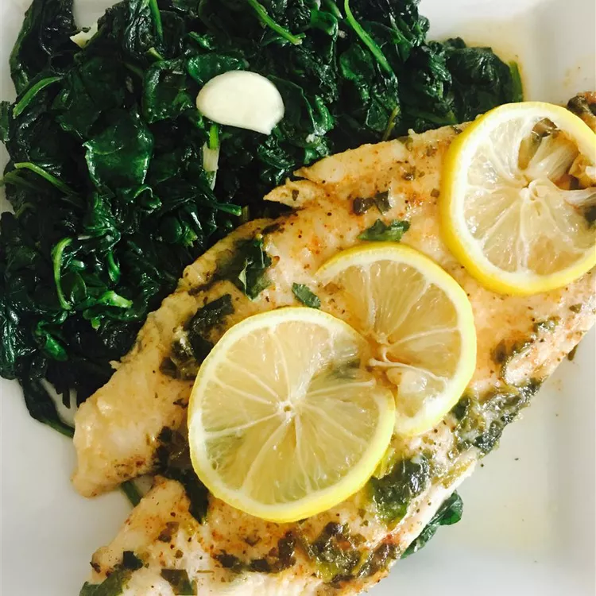
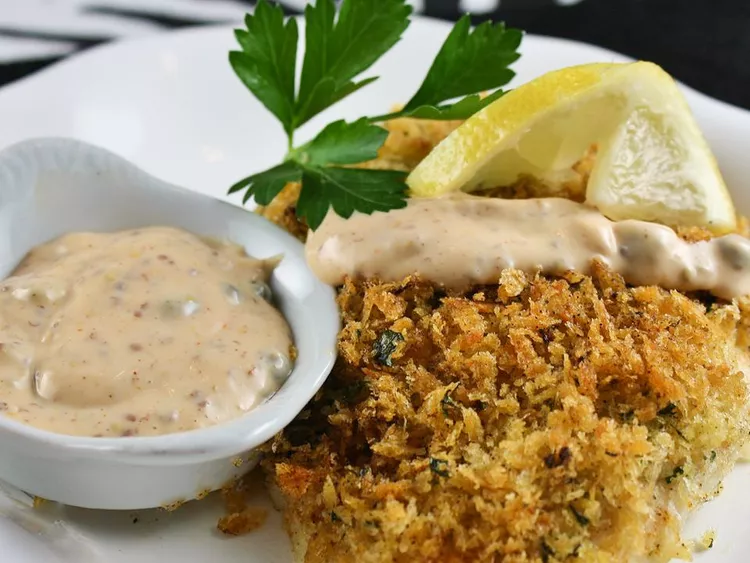
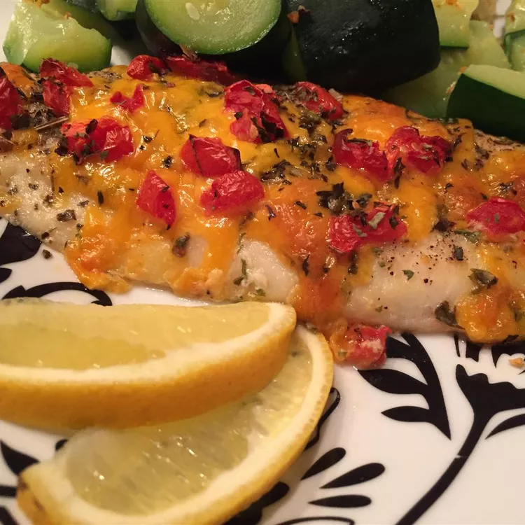

chinese food recipies
chinese swai
Known by many names, such as Asian catfish, Vietnamese catfish, and creamy dory, the swai fish is also commonly labeled basa or sutchi in the seafood department. (Despite the name, swai and catfish are not from the same family of fish.) But no matter what name you choose, you're sure to love this light and flaky fish. Swai's mild flavor makes it a great choice for those who aren't fish fans or cooks looking to help picky eaters transition from chicken to fish. To get introduced to this delicious seafood, try one of our top-rated swai recipes. These 14 recipes all have ratings of 4 stars or higher and rave reviews from our community.

crispy baked basa
In a bowl, thoroughly blend the mayonnaise, mustard, capers, ketchup, paprika, and hot pepper sauce.

smothered swai
